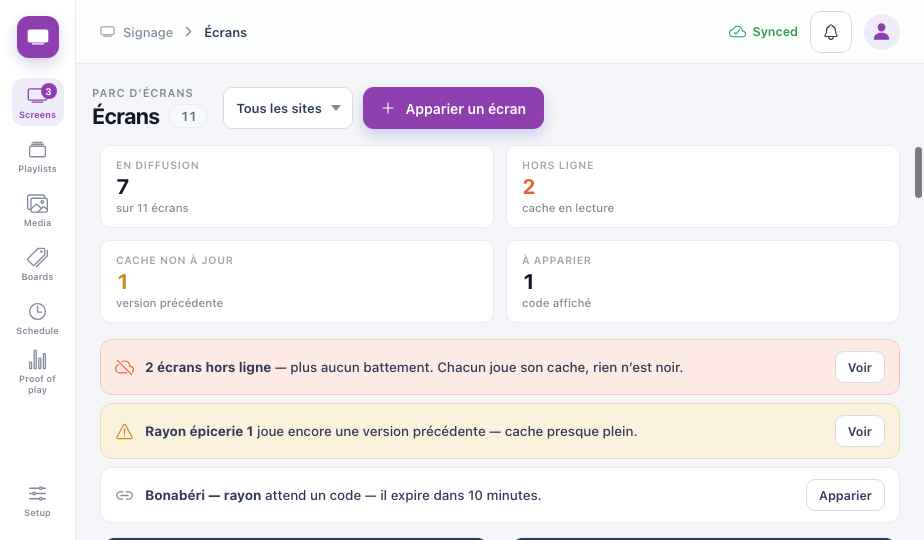
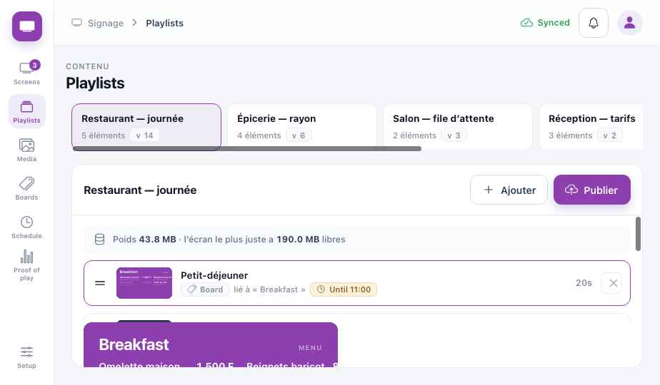
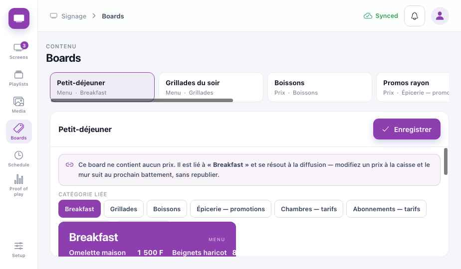

Guide de module
Affichage
Chaque écran de votre activité — menus, écrans de prix, tarifs à la réception, écran d'appel — depuis un seul endroit. Les prix sont lus depuis la caisse, jamais ressaisis. Les chapitres communs sont dans les chapitres Plateforme.
Affichage · Partie 1
Est-ce pour moi ?
Si vous avez une télé au mur, l'Affichage la fait travailler. N'importe quelle télé avec une clé Android, ou une Smart TV, devient un écran Koomzo.
Le menu avec les prix du jour ; petit-déjeuner, déjeuner et carte du bar selon l'heure.
Promotions et lots en rayon, à jour dès que le prix change.
Tarifs à la réception, événement du jour, orientation — et l'écran d'appel d'une file d'attente.
Ce que vous avez à chaque niveau
LiteUn écran qui diffuse
- Écrans : lesquels vivent, ce qu'ils jouent
- Playlists en boucle
- Médiathèque
- Menus et prix depuis la caisse
MidLa bonne chose au bon moment
- Zones : tableau, bandeau promo, défilant
- Horaires : petit-déjeuner jusqu'à 11:00
- Groupes d'écrans
- Appel depuis la File d'attente ou le salon
- Annonces qui expirent seules
FullMaîtriser ce que voit le public
- Validation avant diffusion
- Prise de contrôle pour un message urgent
- Preuve de diffusion
- Orientation et grilles tarifaires
Changer une fois, tous les écrans suivent
Dans un restaurant de Bonapriso, le prix du Poulet DG augmente. Regardez-le passer de la caisse à trois écrans — et le menu passer seul du petit-déjeuner au déjeuner.
- 10:58 — le menu affiche le petit-déjeuner. Ses prix viennent de la caisse.
- Le gérant passe le Poulet DG de 4 500 F à 5 000 F en caisse — une seule fois.
- 11:00 — l'horaire bascule le menu sur le déjeuner, avec le nouveau prix.
- Le bandeau promo reprend le plat du jour à son nouveau prix.
- La boucle de veille de la borne suit aussi. Personne n'a modifié trois écrans.
- La télé de la borne perd le Wi-Fi. Elle continue la dernière version reçue — jamais d'écran noir.
- Un message de prise de contrôle part sur tous les écrans à la fois, puis s'arrête à l'heure choisie.
Affichage · Partie 2
Installation Lite
Environ 20 minutes pour le premier écran.
- Un lecteurUne clé Android TV ou une Smart TV, sur le même Wi-Fi que la caisse.
Application lecteur — bientôt - Appairez l'écranLa télé affiche un code à 6 chiffres. Écrans → Appairer un écran → tapez le code, donnez un nom et un lieu.
- Créez un tableauTableaux (Boards) → choisissez la catégorie affichée (Petit-déjeuner, Boissons, Chambres). Les prix viennent de la caisse.
- Construisez une playlistPlaylists → ajoutez le tableau, une photo, une promotion ; réglez la durée de chacun.
- PubliezL'écran télécharge la playlist et la joue depuis sa propre mémoire.
Affichage · Partie 3
Une journée
| Moment | Ce qui se passe | Écran | Niveau |
|---|---|---|---|
| Ouverture | Un coup d'œil aux Écrans : tout diffuse, rien hors ligne. | Écrans | Lite |
| Matin | Le menu du petit-déjeuner jusqu'à 11:00. | Horaires | Mid |
| Un prix change | Changez-le en caisse. Chaque tableau qui l'affiche suit. | Caisse | Lite |
| Rupture | Marquez le plat indisponible en caisse ; il quitte le menu. | Caisse | Lite |
| Midi et soir | L'horaire change de tableau ; happy hour dès 17:00. | Horaires | Mid |
| Une urgence | Prise de contrôle : un message sur tous les écrans, avec une heure de fin. | Écrans | Full |
| Fin de mois | Preuve de diffusion : ce qui a vraiment joué, quand, combien de temps. | Diffusions | Full |
Affichage · Partie 4
Les écrans
La barre de gauche : Écrans (Screens), Playlists, Médias, Tableaux (Boards), Horaires (Schedule), Diffusions (Proof of play), et Configuration en bas.
Écrans Lite

1234567- Pastille — les écrans à regarder.
- Sites — une agence ou toutes.
- Appairer un écran — tapez le code affiché par la télé.
- En diffusion · hors ligne · cache non à jour · à appairer.
- Hors ligne — plus de battement ; l'écran continue ce qu'il a.
- Version précédente — souvent parce que sa mémoire est presque pleine.
- À appairer — le code expire en 10 minutes.
Playlists Lite

123456- Playlists — une par lieu : restaurant, rayon épicerie, file du salon, réception.
- Poids — comparé à l'écran qui a le moins de mémoire libre.
- Éléments — glissez pour réordonner ; chacun s'affiche quelques secondes.
- Jusqu'à 11:00 — un élément peut ne jouer qu'une partie de la journée. Mid
- Ajouter un tableau, une photo, une vidéo ou une annonce.
- Publier — les écrans la prennent au prochain battement.
Tableaux Lite

12345- Tableaux — menus et listes de prix.
- Aucun prix stocké ici — le tableau est lié à une catégorie et lit les prix à la diffusion.
- Catégorie liée — petit-déjeuner, grillades, boissons, promotions, chambres, abonnements.
- Aperçu — exactement ce que la télé affichera.
- Enregistrer.
Affichage · Partie 5
En cas de problème
Vérifiez la playlist de l'écran et les horaires. Un élément du petit-déjeuner marqué Jusqu'à 11:00 ne joue que le matin.
L'écran se met à jour au prochain battement. S'il est Hors ligne, il joue sa dernière copie — réparez le Wi-Fi et il se rattrape.
Elle continue ce qu'elle a. Rien ne devient noir. Écrans l'affiche hors ligne jusqu'à son retour.
Donnez une date de fin aux promotions et annonces ; elles partent seules. Retirez-la de la playlist et publiez.
La télé affiche un nouveau code. Tapez celui-là.
Affichage · Partie 6
Aller plus loin
Zones et modèles Mid
Partagez un écran : menu à gauche, bandeau promo, défilant en bas.
Groupes d'écrans Mid
Publiez sur tous les écrans d'un étage ou d'une boutique d'un coup.
Validation Full
Le nouveau contenu attend le gérant avant d'être vu du public.
Preuve de diffusion Full
Ce qui a vraiment joué — pour vous ou pour la promotion d'un fournisseur.
Plusieurs sites Full
Une playlist pour toutes les agences, avec des variantes locales. Formule Professional.
À imprimer et afficher
Fiches du personnel
2. Tout est En diffusion ?
3. Hors ligne ? Vérifiez le courant et le Wi-Fi de la télé.
4. Version précédente ? Prévenez le gérant.
2. Rupture : marquez l'article indisponible.
3. Le tableau suit en une minute.
2. Tapez le message.
3. Réglez l'heure de fin.
4. Vérifiez un écran.
Guide utilisateur Koomzo · Affichage · Version 2 · Les écrans montrés sont ceux du prototype Koomzo actuel. Les noms et prix sont des exemples.